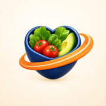
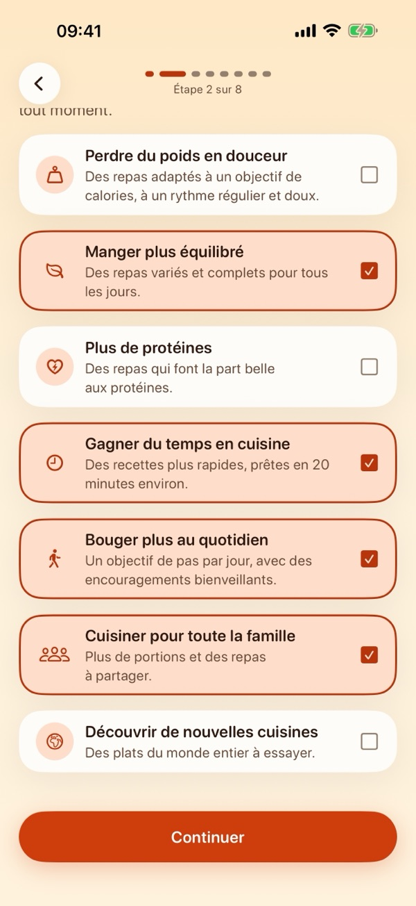
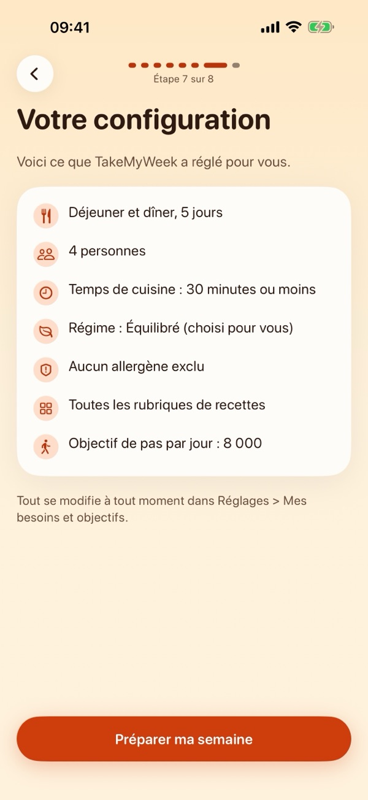
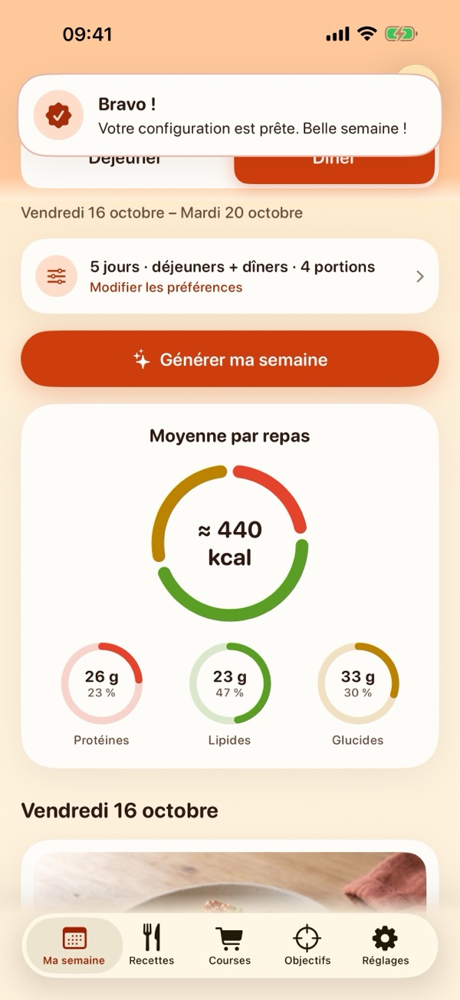
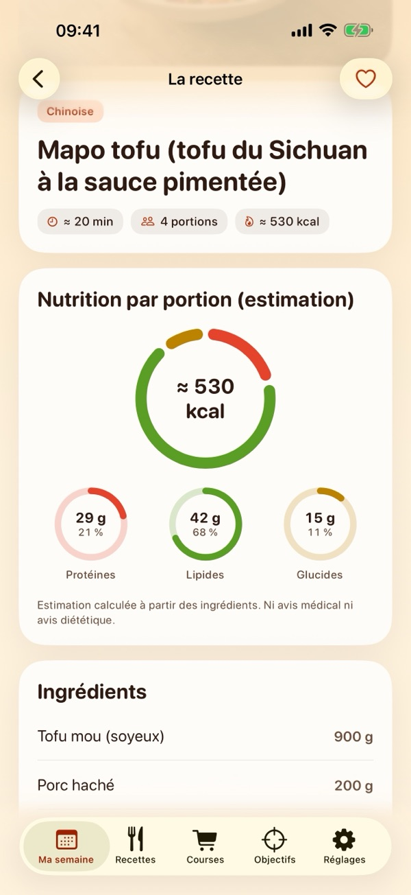
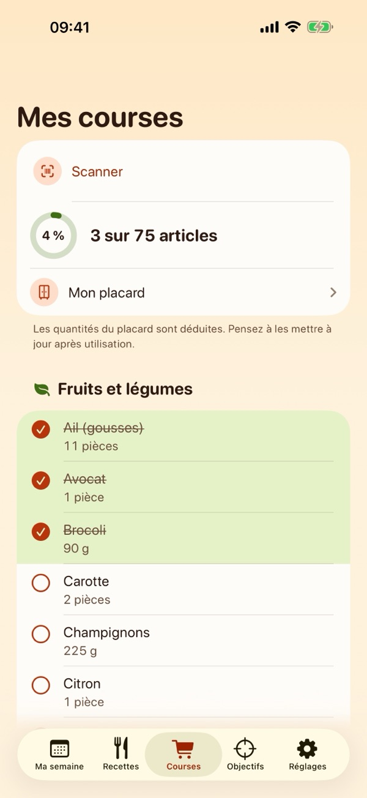
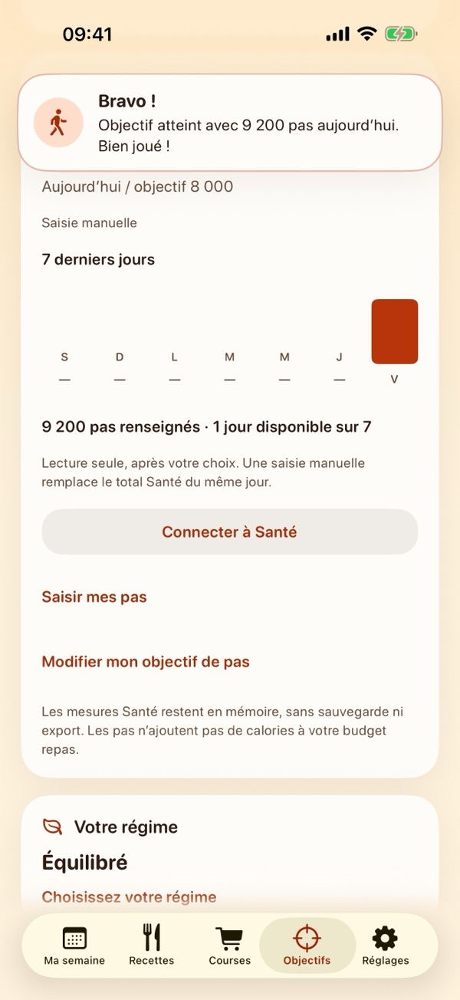

App iPhone · Sans compte · Sans publicité
TakeMyWeek
Qu’est-ce qu’on mange cette semaine ? Répondez à quelques questions : TakeMyWeek règle votre semaine selon vos besoins, avec vos déjeuners et dîners, la liste de courses classée par rayon et un petit bravo quand vous atteignez vos objectifs.
Votre semaine, organisée
- Réglée selon vos besoins (version 2.2)Dites à TakeMyWeek ce qui compte pour vous : manger plus équilibré, gagner du temps, plus de protéines, cuisiner pour la famille, bouger plus ou perdre du poids en douceur. Quelques questions, et vos repas, votre régime, votre temps de cuisine et vos objectifs sont réglés pour vous, avec un court récapitulatif des choix faits. Tout se modifie à tout moment dans Réglages › Mes besoins et objectifs.
- Félicitations et encouragements (version 2.2)Un court message quand vous préparez une semaine, terminez vos courses ou atteignez votre objectif de pas, et une carte discrète dans Objectifs. Uniquement dans l’app, sans notification.
- Déjeuners et dîners en un gestePlanifiez 5 ou 7 jours, les dîners seuls ou les déjeuners et les dîners. Verrouillez les repas qui vous plaisent, renouvelez les autres ou remplacez un seul repas.
- Une liste de courses classée par rayonLes quantités sont additionnées pour vos portions et arrondies à l’unité. Déduisez ce que vous avez déjà dans votre placard.
- Plus de 1 000 recettes en 10 rubriques (version 2.1)Classiques, française, chinoise, coréenne, antillaise, africaine, repas de la flemme, léger et protéiné, et deux nouvelles rubriques : Bas en calories (moins de 400 kcal par portion, valeurs estimées) et Réunionnaise. Chaque recette affiche les calories, protéines, lipides et glucides estimés par portion.
- Vos filtres, respectésPortions, temps maximal, dix régimes, ingrédients et allergènes exclus. L’app ne les assouplit jamais d’elle-même.
- Objectifs (version 2.1, gratuit)Pour les adultes : notez votre poids, fixez un poids cible et obtenez un objectif calorique quotidien estimé, avec des garde-fous, puis choisissez l’un des dix régimes pour vos prochains repas. Ce sont des estimations, pas un avis médical.
- Pas depuis Santé (version 2.1, facultatif)En lecture seule : l’app lit votre nombre de pas pour l’afficher à côté de vos objectifs. Elle n’écrit jamais dans Santé et vos pas ne quittent pas votre iPhone. Vous pouvez aussi saisir vos pas à la main.
- Scan de codes-barres (version 2.1, Premium)Scannez ou saisissez un code-barres pour voir les valeurs nutritionnelles pour 100 g d’un produit, tirées de la base ouverte Open Food Facts, puis cochez-le dans vos courses ou ajoutez-le à votre placard. Seul le code-barres est envoyé.
- 10 langues, unités métriques ou américainesAnglais, français, espagnol, allemand, italien, portugais (Brésil), néerlandais, japonais, coréen et chinois traditionnel.
- TakeMyWeek PremiumAbonnement à renouvellement automatique, annuel avec essai gratuit ou mensuel. Il débloque la création et la modification des semaines, toutes les recettes, les filtres avancés, le placard et le scan. Les nouvelles installations (version 2.1 et suivantes) peuvent voir une offre de bienvenue pendant 48 heures (voir les conditions d’utilisation). Sans abonnement, vous pouvez parcourir les rubriques, relire votre semaine et vos courses enregistrées, et utiliser les Objectifs et les pas.






Politique de confidentialité
En vigueur le 17 octobre 2026 · s’applique à TakeMyWeek (anciennement Dinner Ideas, CookCart et Weekbite) pour iPhone, version 1.0 et suivantes.
Ce qui reste sur votre iPhone
Votre planning, vos préférences (nombre de jours, repas par jour, portions, temps maximal, régime, ingrédients et allergènes exclus), votre placard, vos favoris et vos coches de courses sont enregistrés dans un fichier de l’app sur votre appareil. Depuis la version 2.1, ce fichier contient aussi vos Objectifs : le profil que vous saisissez (âge, taille, sexe utilisé par la formule de calcul, niveau d’activité, rythme), votre journal de poids et votre poids cible, votre régime et les pas saisis à la main. Depuis la version 2.2, il contient aussi vos réponses aux questions « Mes besoins » : vos objectifs, votre foyer, vos repas, votre choix de régime, vos allergènes, votre temps de cuisine, vos rubriques de recettes et votre objectif de pas. Les derniers produits scannés sont gardés dans un cache local séparé (200 produits au plus, pendant 30 jours). Rien de tout cela ne quitte votre iPhone, sauf si vous choisissez de le partager ou de l’exporter.
Félicitations et encouragements (version 2.2 et suivantes)
Les messages sont choisis sur votre iPhone à partir des données ci-dessus, par exemple vos pas ou votre semaine enregistrée ; rien n’est envoyé. Ils s’affichent uniquement dans l’app, jamais en notification. Un petit fichier séparé de l’app retient seulement les félicitations déjà affichées et si l’invitation « Mes besoins » a été vue, pour ne rien répéter. Il ne contient rien d’autre, est exclu des sauvegardes iCloud et de l’appareil, ne figure jamais dans les exports et est effacé par Réglages › Réinitialiser les données. Les félicitations liées au poids n’apparaissent qu’avec un profil adulte, au-dessus du seuil de poids de santé et à un rythme doux ; aucun message ne félicite de manger moins.
Santé (version 2.1 et suivantes)
Si vous touchez Connecter à Santé et l’autorisez, TakeMyWeek lit uniquement votre nombre de pas dans l’app Santé, en lecture seule : elle n’y écrit jamais rien. Les pas lus servent à afficher votre total du jour et votre objectif de pas ; ils restent sur votre iPhone, ne sont pas enregistrés dans le fichier de l’app, ne figurent pas dans les exports et ne sont jamais envoyés, ni à nous ni à personne. Les données de Santé ne servent jamais à la publicité ni au marketing. Vous pouvez retirer l’accès à tout moment dans Réglages › Confidentialité et sécurité › Santé › TakeMyWeek, ou depuis l’app Santé. Sans Santé, vous pouvez saisir vos pas à la main.
Scan de codes-barres et Open Food Facts (version 2.1 et suivantes)
Le scan est une fonction Premium facultative ; c’est la seule fonction de TakeMyWeek qui se connecte à un service autre qu’Apple. Quand vous scannez ou saisissez un code-barres, l’app envoie uniquement ce code-barres à la base Open Food Facts (world.openfoodfacts.org), en HTTPS, pour obtenir le nom, la marque, la quantité et les valeurs nutritionnelles du produit. La requête ne contient ni compte, ni cookie, ni identifiant ; comme toute requête internet, elle révèle l’adresse IP de votre appareil, et elle indique le nom et la version de l’app. Votre planning, vos préférences, vos objectifs, votre poids et vos données de Santé ne sont jamais envoyés. L’image de la caméra sert uniquement, sur votre iPhone, à lire le code-barres ; elle n’est ni enregistrée ni envoyée. La politique de confidentialité d’Open Food Facts s’applique au traitement de ses requêtes. Les données produit viennent des contributeurs d’Open Food Facts et sont disponibles sous licence Open Database License (ODbL).
Quand des données quittent votre appareil, c’est parce que vous l’avez demandé
- Partage et export : quand vous partagez votre planning ou vos courses, ou exportez une sauvegarde, iOS transmet le contenu à l’app ou à l’endroit que vous choisissez. Une sauvegarde JSON contient votre planning, vos préférences, vos favoris, votre placard, depuis la version 2.1 votre profil d’Objectifs, votre régime, votre journal de poids et vos pas saisis à la main, et depuis la version 2.2 vos réponses « Mes besoins » ; jamais les pas lus dans Santé. Les sauvegardes ne sont pas chiffrées par TakeMyWeek : rangez-les en lieu sûr.
- Sauvegardes iCloud ou de l’appareil : comme les autres données d’app, le fichier peut être inclus dans les sauvegardes de votre iPhone selon les réglages de votre compte Apple.
- Scan de codes-barres : uniquement le code-barres, comme indiqué ci-dessus.
- Liens : un lien touché dans l’app s’ouvre dans votre navigateur ou l’App Store, où la politique de confidentialité du site s’applique.
Achats et abonnements
TakeMyWeek Premium s’achète dans l’App Store d’Apple. Apple traite le paiement et gère l’abonnement selon sa propre politique de confidentialité. Nous ne recevons jamais votre nom, votre compte Apple ni vos données de paiement. L’app demande seulement au système d’achat d’Apple, sur votre iPhone, si un abonnement est actif. Pour l’offre de bienvenue (version 2.1 et suivantes), l’app enregistre dans le trousseau de votre iPhone l’heure de sa première ouverture et si l’offre s’applique à cette installation. Cet élément reste sur cet appareil, n’est pas synchronisé avec iCloud et n’est jamais envoyé ; il peut subsister après la suppression de l’app, afin qu’une réinstallation ne relance pas le délai de 48 heures.
Réseau
Le catalogue de recettes est intégré à l’app, et l’app ne nous envoie rien. Elle contacte l’App Store pour afficher les offres d’abonnement et vérifier ou restaurer un achat, et, seulement quand vous utilisez le scan, Open Food Facts comme décrit ci-dessus. Tout le reste fonctionne hors connexion.
Enfants
TakeMyWeek ne collecte aucune information, auprès de personne, enfants compris. Les Objectifs (poids et objectif calorique) sont réservés aux adultes de 18 ans et plus ; l’app refuse un profil de moins de 18 ans.
Informations de santé
Les calories, les macronutriments, les régimes, l’objectif calorique et l’objectif de pas sont des estimations et des informations générales, pas un avis médical ou diététique. L’objectif calorique repose sur une formule publiée, avec des garde-fous (apport minimal quotidien, rythme doux ou modéré, aucune prise de poids visée) ; il ne peut pas prédire vos résultats. Si vous êtes enceinte ou allaitez, avez une maladie, ou avez ou avez eu un trouble du comportement alimentaire, parlez-en à un professionnel de santé avant de changer d’alimentation ; si vous l’indiquez dans votre profil, l’app ne calcule pas de déficit calorique. Les filtres de régime et d’allergènes reposent sur les ingrédients de notre catalogue : vérifiez toujours les emballages (allergènes, contaminations croisées).
Suppression
Les données restent sur votre iPhone jusqu’à ce que vous les remplaciez ou supprimiez l’app. Réglages › Réinitialiser les données efface les données actives (planning, préférences, favoris, placard, coches de courses, Objectifs, réponses « Mes besoins », liste des félicitations déjà affichées et cache des produits scannés), mais conserve une copie de récupération sur l’appareil ; supprimez l’app (plutôt que de la décharger) pour effacer tout ce qu’elle a enregistré. L’élément de l’offre de bienvenue peut rester dans le trousseau, comme expliqué plus haut. Vos pas restent dans l’app Santé, que vous contrôlez. Les fichiers de sauvegarde exportés se suppriment séparément. Comme nous ne détenons rien sur aucun serveur, il n’y a rien à nous demander.
Modifications
Si cette politique change, la nouvelle version sera publiée sur cette page avec sa date d’effet. Version en vigueur : 16 octobre 2026.
Conditions d’utilisation
En vigueur le 17 octobre 2026
TakeMyWeek est concédée sous le contrat de licence standard d’Apple.
TakeMyWeek Premium
Abonnement à renouvellement automatique, annuel (avec essai gratuit pour les nouveaux abonnés, quand il est proposé) ou mensuel. Les prix sont affichés dans l’app avant l’achat et dépendent de votre pays. Le paiement est prélevé sur votre compte Apple à la confirmation de l’achat ; l’abonnement se renouvelle automatiquement, sauf résiliation au moins 24 heures avant la fin de la période en cours. Vous pouvez le gérer ou le résilier à tout moment dans les réglages de votre compte App Store ; supprimer l’app ne résilie pas l’abonnement.
Offre de bienvenue (version 2.1 et suivantes)
Sur une nouvelle installation de la version 2.1 ou d’une version ultérieure, l’onglet Objectifs peut proposer une offre de bienvenue pendant les 48 heures qui suivent la première ouverture de l’app sur cet iPhone. Elle n’apparaît pas sur un iPhone qui contenait déjà des données de l’app, et disparaît à la fin des 48 heures ou si vous êtes déjà abonné. Il s’agit d’un abonnement annuel dont la première année est payée d’avance, en une seule fois, à un prix de lancement réduit ; il se renouvelle ensuite au prix annuel habituel affiché avant l’achat, sauf résiliation au moins 24 heures avant la fin de la première année. Apple décide de l’éligibilité : une offre de lancement ne peut servir qu’une fois par groupe d’abonnements ; elle peut donc être indisponible si vous avez déjà profité d’un essai gratuit ou d’une autre offre de lancement de TakeMyWeek Premium.
Recettes et nutrition
Les durées, les calories et les macronutriments sont des estimations calculées à partir des ingrédients ; ce n’est pas un avis médical ou diététique. Les recettes n’ont pas toutes été testées en cuisine. Les photos des recettes sont des illustrations. Vérifiez toujours les allergènes sur les emballages.
Objectifs, pas et données produit
Les objectifs, l’objectif calorique et l’objectif de pas sont des estimations générales destinées aux adultes ; ils ne remplacent pas l’avis d’un professionnel de santé. Les informations produit du scan viennent de la base ouverte et collaborative Open Food Facts (ODbL) ; elles peuvent être incomplètes ou dépassées : vérifiez l’emballage.
Assistance
Nous lisons chaque message et répondons généralement en quelques jours.
balustreyonni@gmail.com
- Comment modifier mes besoins et objectifs ?
- Allez dans Réglages › Mes besoins et objectifs : les questions s’ouvrent préremplies avec vos réponses et réglages actuels. L’enregistrement met à jour vos réglages et objectifs ; votre semaine enregistrée reste telle quelle jusqu’à ce que vous en prépariez une nouvelle. Changer le nombre de portions fait partie de Premium, comme dans les préférences de la semaine.
- Les félicitations envoient-elles des notifications ?
- Non. Elles s’affichent uniquement dans l’app, quelques secondes ou jusqu’à ce que vous les touchiez, et chacune une seule fois.
- « Pas assez de recettes compatibles » : pourquoi ?
- Vos filtres (temps maximal, régime, ingrédients ou allergènes exclus) laissent moins de recettes que de repas dans votre semaine. L’app indique s’il manque des déjeuners ou des dîners et n’assouplit jamais vos filtres d’elle-même : augmentez le temps maximal, passez à 5 jours, planifiez seulement les dîners ou retirez une exclusion. Quand elle règle tout selon vos besoins, elle n’ajuste que ce qu’elle a choisi pour vous (par exemple le régime ou le temps de cuisine) et le dit dans le récapitulatif ; vos allergènes, un régime que vous avez choisi et vos rubriques ne sont jamais modifiés.
- Comment planifier les déjeuners en plus des dîners ?
- Dans les préférences de la semaine, choisissez déjeuners et dîners. La semaine a alors un onglet Déjeuner et un onglet Dîner ; les repas verrouillés restent en place quand vous générez de nouveau.
- Comment fonctionnent les Objectifs ?
- Ouvrez l’onglet Objectifs, saisissez votre profil (adultes seulement), votre poids actuel, votre poids cible et votre rythme. L’app estime un objectif calorique quotidien avec des garde-fous et vous laisse choisir l’un des dix régimes pour vos prochains repas. Votre semaine en cours reste telle quelle jusqu’à la prochaine génération.
- Comment connecter ou déconnecter mes pas ?
- Dans Objectifs, touchez Connecter à Santé et autorisez la lecture du nombre de pas. Pour arrêter : Réglages › Confidentialité et sécurité › Santé › TakeMyWeek, ou l’app Santé. Sans données ou sans accès, vous pouvez saisir vos pas à la main.
- Le scan ne trouve pas mon produit.
- Le scan demande une connexion internet et un abonnement TakeMyWeek Premium. Si un produit n’est pas dans Open Food Facts, vérifiez le code-barres ou essayez un autre produit ; vous pouvez aussi saisir les chiffres du code.
- Je ne vois pas l’offre de bienvenue.
- Elle apparaît dans l’onglet Objectifs seulement sur une nouvelle installation de la version 2.1 ou d’une version ultérieure, pendant les 48 heures qui suivent la première ouverture, si Apple confirme que votre compte y a droit et que vous n’êtes pas déjà abonné.
- Comment gérer, résilier ou restaurer mon abonnement ?
- Gérez-le ou résiliez-le dans l’app Réglages de votre iPhone : touchez votre nom, puis Abonnements. Sur un nouvel appareil, ouvrez TakeMyWeek, allez dans Réglages › Abonnement et touchez Restaurer les achats.
- Que puis-je faire sans abonnement ?
- Parcourir les rubriques, relire votre semaine enregistrée, ses recettes et vos courses, et utiliser les Objectifs et les pas. Créer ou modifier une semaine, ouvrir les autres recettes, les filtres avancés, le placard et le scan font partie de Premium.
- Comment transférer mes données sur un nouvel iPhone ?
- Réglages › Exporter une sauvegarde JSON crée un fichier ; ouvrez-le avec Réglages › Importer une sauvegarde JSON sur le nouvel appareil. Les pas de Santé ne sont pas dans la sauvegarde : reconnectez Santé sur le nouvel iPhone.